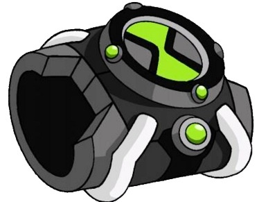
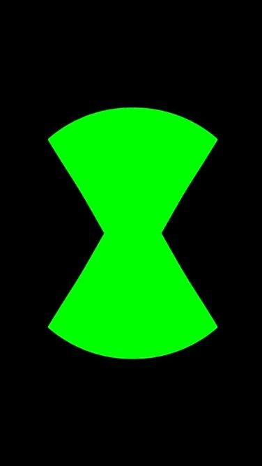
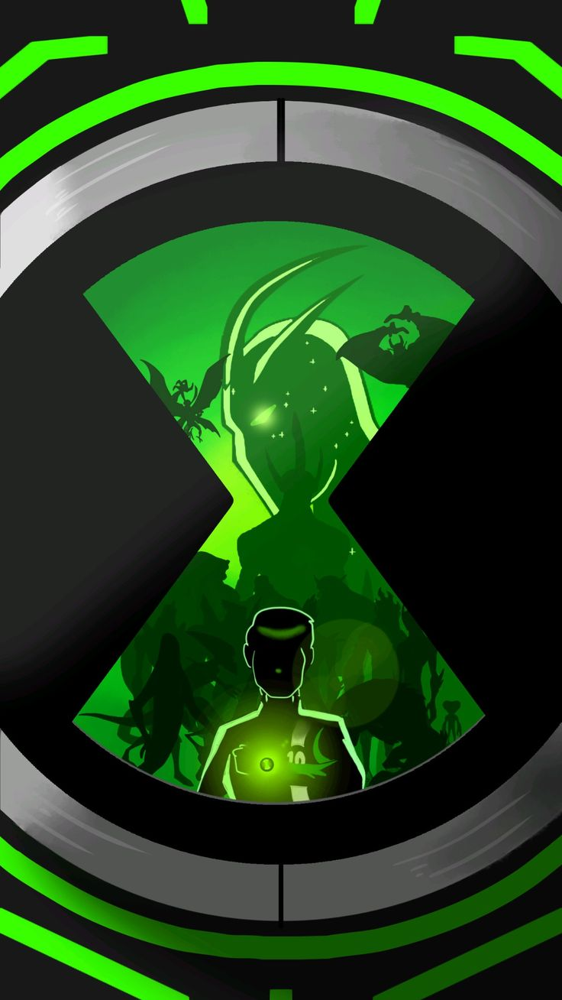
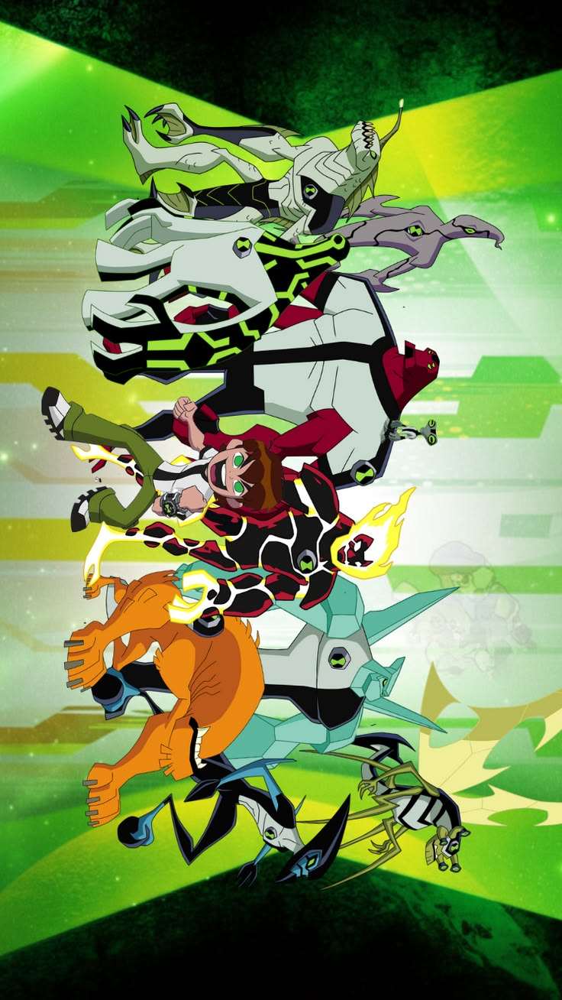

The Most Powerful Device in the Universe
The Omnitrix is a powerful alien device worn on the wrist. It stores DNA samples from many alien species and allows the user to transform into them.



The Omnitrix was created by the brilliant Galvan scientist Azmuth. His goal was to allow different species across the universe to understand each other.
However, the device became one of the most powerful technologies ever created and attracted many enemies.
The first version discovered by Ben Tennyson.
A modified version capable of Ultimate Evolutions.
The perfected device designed by Azmuth.
Together with Gwen, Kevin and Grandpa Max, Ben protects Earth from powerful enemies.

Power is meaningful only when used for good.